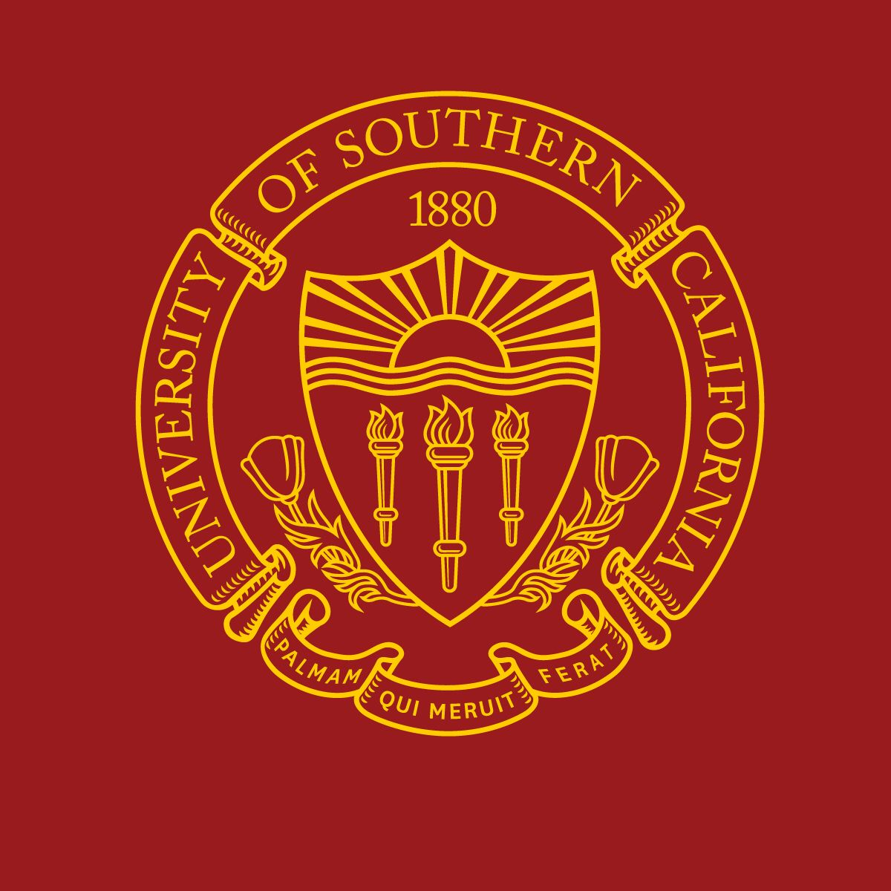
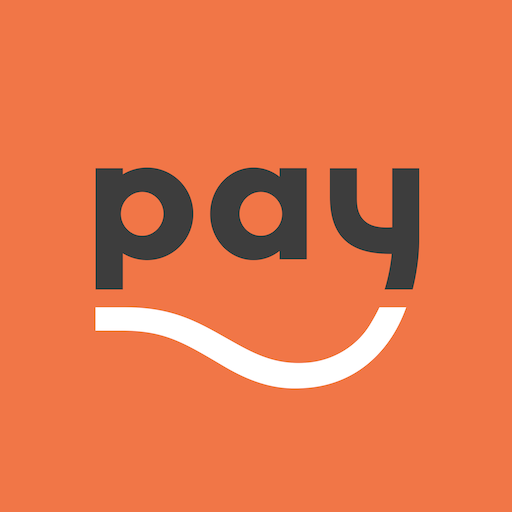

The Cigna Group
Full Stack Engineering Intern | May 2023-Present
- Responsible for the major upgrade of an internal data management application, migrating from version 3.x.x to 5.x.x with over 500 changes
- Building full-stack application to conduct medical surveys and find parent-disease relations, using Amazon Neptune, Node.js, React, and MongoDB
- Discovering ways to visualize client-facing and internal metadata for the Data Engineering Team, using Tableau and React